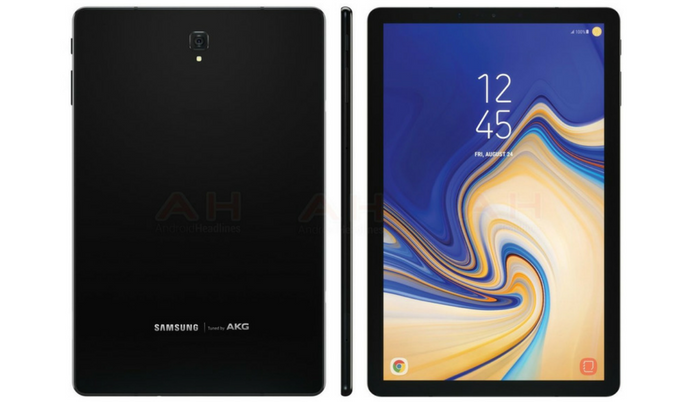

Samsung Galaxy Tab S4 Android Tablet to Launch Early on August 1st
Posted by Team on 29 July 2018 in • 5 min read

In the last couple of months, we are seeing several leaks about the upcoming Galaxy Note 9 and Galaxy Tab S4. Samsung has already confirmed to launch the Galaxy Note 9 at the Unpacked event scheduled on August 9th in New York. While the Galaxy Watch might be unveiled alongside the Galaxy Note 9, we don’t expect the company to launch the Galaxy Tab S4 on August 9th. Till now, we are expecting them to bring their latest tablet during the IFA 2018 in early September.
However, the latest news suggests the company to hold a separate event on August 1st to launch the Galaxy Tab S4. The previous leaks revealed the Tab S4 to sport 10.5-inch display with 2560 x 1600 pixels resolution and 16:10 aspect ratio. We will be looking at very thin bezels on this tablet. It will come powered by the last-gen Qualcomm Snapdragon 835 Mobile Platform based on 10nm FinFET process.
With the Galaxy Tab S4, the company will be ditching the fingerprint sensor in favor of facial recognition technology. Unlike several other Android devices, the Galaxy Tab S4 will additionally feature IRIS scanner for more secure authentication. The tablet is leaked to come with 4GB of RAM and 64GB of internal storage. However, the company might announce a few other storage options on the launch stage.
In the camera department, the Galaxy Tab S4 sports a 13MP sensor on the rear and an 8MP sensor on the front. It will be backed by a huge 7,300mAh non-removable battery that should give a decent battery life. The Galaxy Tab S4 will be running on Android 8.1 Oreo out of the box with Samsung Experience UI on top. It will also get support for Samsung DeX to have the desktop experience by connecting to a monitor. Stay tuned on PhoneRadar for more details!
Source